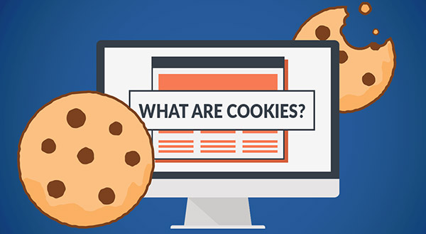

Internet cookies are a very large part of how a modern website functions; however, they also tend to raise quite important concerns involving the privacy of the users on these sites. Cookies are small text files that are stored on a user's device by a website. Normally these files will contain data such as someone's login information, preferences, or browsing activity. This allows websites to recognize any returning users and give them a more personalized experience.
Before diving any deeper into this topic, it is important to know the origin of cookies. Cookies go all the way back to 1994, when Lou Montulli created the very first HTTP cookie while making an online shopping website. The original purpose of it was to help the website remember the user’s information such as the items they have in their shopping cart without the website servers overloading. The creation of cookies soon became a large part of web browsing, enabling different features such as saved logins and customized content.
to go more in depth on them, session cookies are cookies that will only exist while a user is currently using a website. When the browser is closed, these cookies are automatically deleted. They're mainly present to help with navigation and allow sites to remember specific actions such as items that are added to a cart during a single visit.
In opposition to session cookies, persistent cookies will exist on a user’s device for a much longer period of time. This could potentially be as long as a couple of months or even a couple of years. These cookies mainly store a user’s login information or their specific preferences. Because of these cookies, websites are able to recognize a user over multiple visits to their websites.
The last important type of cookies to be discussed are third-party cookies. These cookies are cookies that are made from places outside of the website that the user is currently browsing through. Their main use is for tracking a user and advertising. These cookies essentially follow users through the internet, collecting data on them in order to see what their interests are so they can send adds the user’s way that target their interest.
The main purpose of cookies is to improve the user’s overall experience on the website. Cookies are used to allow websites to remember preferences, personalize content, and to keep their users logged in. Cookies are also useful with helping the owners of these sites analyze traffic and understand how users interact with their sites. Cookies have multiple uses depending on the type of cookie they are.
| The Type | The Purpose |
|---|---|
| Session Cookies | Keeps you logged in while browsing the website |
| Persistent Cookies | Saves your settings and preferences |
| Third-party Cookies | Tracks your browsing activity for advertising purposes |